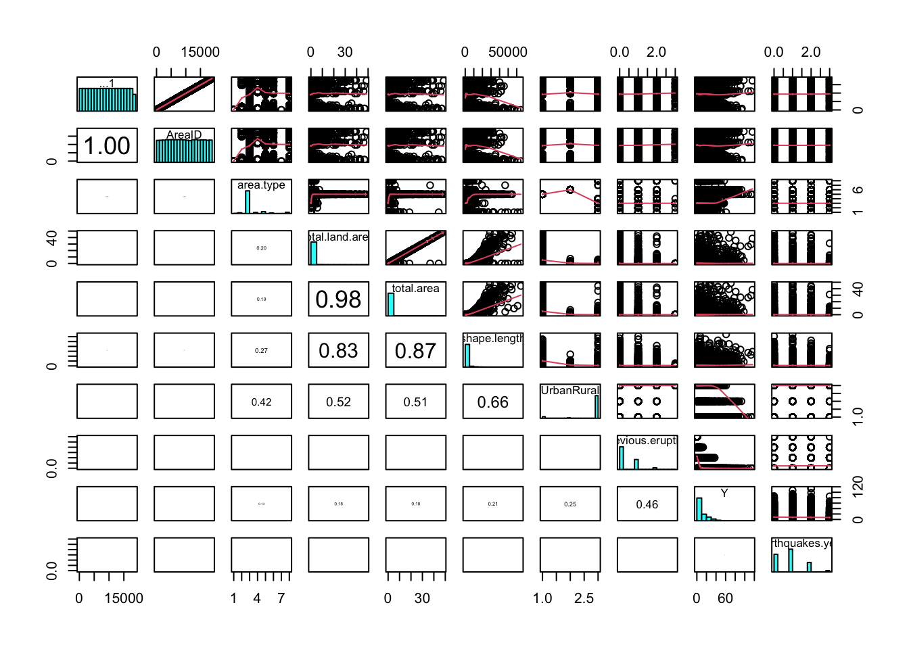
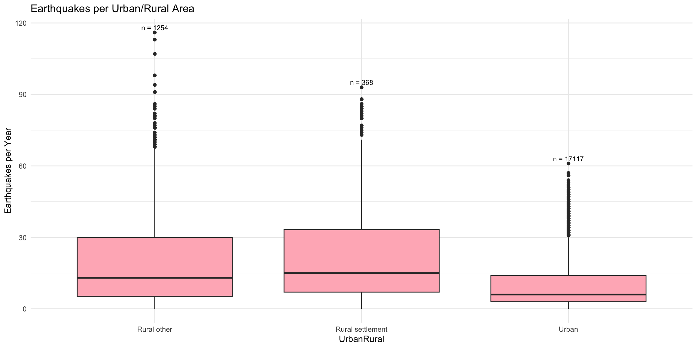
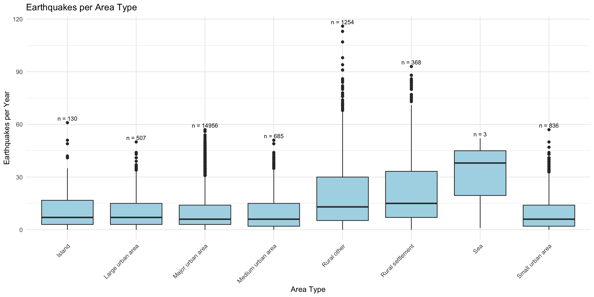
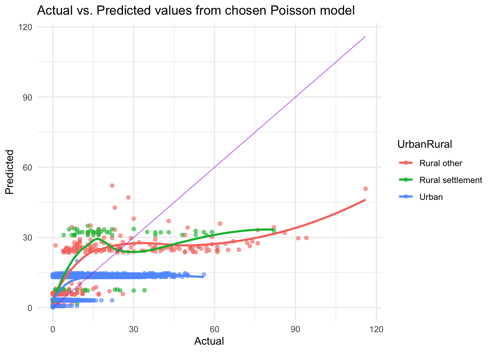
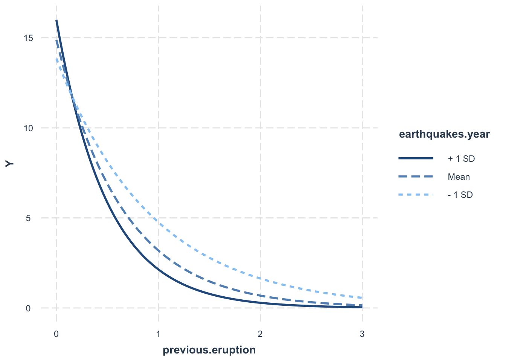
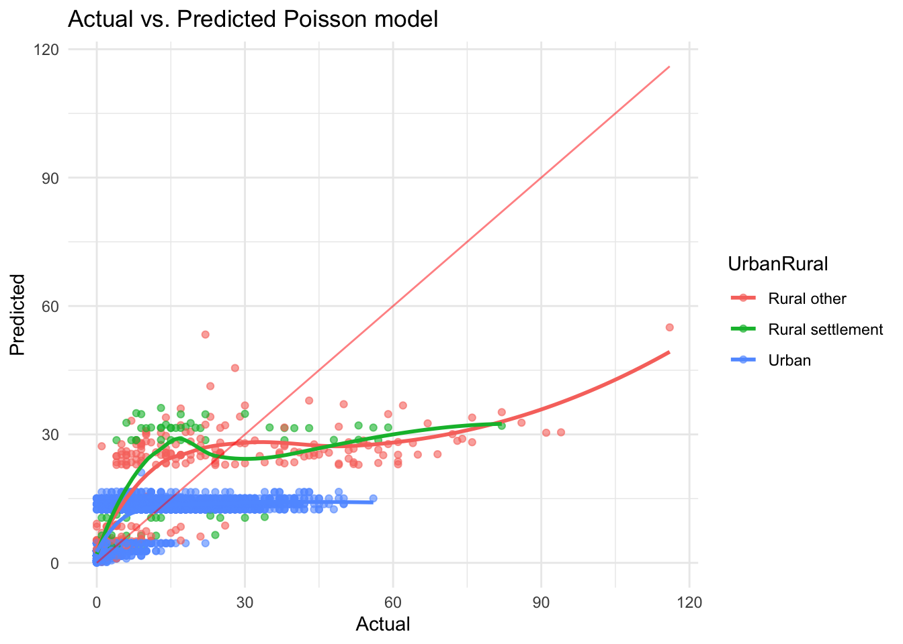

Code
pairs20x(data)
Brittany Alexandra
June 1, 2025
When is the next volcano due to erupt? Any moment now, unfortunately! (Give or take 1000 years or so).
A volcano could happen this afternoon, or it might not happen for another 1000 years. Volcanoes are almost impossible to predict; they seem to happen completely at random.
However, we do know of a statistical distribution that counts the number of events in a fixed space of time…the Poisson distribution! The Poisson process counts the number of events occurring in a fixed time or space, when events occur independently and at a constant average rate, where the formula for our statistical model is as follows:
\(Y_i \sim \text{Poisson}(\mu_i),\) where \(\mu_i = \beta_0 + \beta_1 x_i\quad\)
Today, we will look at how to use the poisson distribution to model the occurrence of volcanic events per year in Country A. This country is composed of smaller areas that regularly record information on the following:
area.type: Categorical variable with 9 categories.
total.land.area: Total land area in square kms
total.area: Total area (including water) in square kms
shape.length: Length of the shape of the area in kms
UrbanRural: Recoded variable area.type into bigger categories
previous.eruption: Number of previous volcanic eruptions in the are
Y: Number of eruptions during the observation period. The observation time is ONE
year for all areas.
earthquakes.year: Average number of earthquakes per year in the area
A quick note, this blog is not focused on the exploratory part of this data, and will not go in-depth to all the metrics and terms used, but I aim to add another page soon explaining the mathematics and reasoning behind each step!
Each analysis begins with selecting which variables to include in our model. Contrary to intuition, we do not want to include every variable available — for several key reasons:
Occam’s Razor suggests that, all else equal, simpler models are preferable to more complex ones.
Including too many variables can introduce multicollinearity, where highly correlated predictors make coefficient estimates unstable and unreliable.
The methods to identify appropriate explanatory variables are listed below (this is specific to our analysis):
Domain knowledge: Always the most important source of insight. Correlation plots: Useful for detecting multicollinearity between explanatory variables.
Chi-square tests: To test for associations between categorical variables.
Akaike Information Criterion (AIC): Balances model fit with model complexity to guide selection relative to comparative models.
We aim to choose explanatory variables that are strongly associated with the response variable while avoiding those that are highly correlated with each other. We will walk through choosing appropriate variables to model our response, Y, with an example, focusing on the variables area.type and UrbanRural
In the pairs plot below, we can see area.type and UrbanRuralare moderately colinear with a correlation of 0.42 and therefore only one should in the model.
It’s important to ask whether there is a contextual benefit to including area.type or UrbanRural. As we are interested in modelling the frequency of eruptions, and not the impact of specific area types, I am unbiased as to which variable we include in the model from a contextual standpoint.
As established by our pairs plot, it looks like we face a few colinear variables, and we are interested in looking into UrbanRural and area.type.
We can test the hypothesis that they both variables contain similar information using a chi-square test. This test checks for a statistically significant association between two categorical variables, with the null hypothesis being that there is there is no association between two categorical variables.
\[ H_0: \text{The two categorical variables are independent.} \]
Below, we can see the test result has a small p-value of 0.0005, thus showing no evidence to reject the null hypothesis — suggesting that the distribution of UrbanRural and area.type categories is likely due to chance, and they are not significantly different.
Given area.type and UrbanRural are not statistically different, and they have eight anad three levels, respectively, we will opt for the simpler explanatory variable with three levels, UrbanRural.
Why do we want to reduce our model complexity? Well, simpler models are easier to interpret when we are quantifying their impact on the response. Remember, this is statistical modelling NOT machine learning. We need to be able to explain every part going on, and the effect each variable has on the result.
From a computational standpoint, it enables a faster convergence of models, allows parameter coefficients to be more stable, and helps avoids overfitting.
# We can see that we have a small p-value of 0.00049 (p-val < 0.05), therefore have no evidence to reject the null hypothesis that the observed distribution difference across the categories 'UrbanRural` and `area.type` is due to chance
tabledata <- table(data$UrbanRural, data$area.type)
chiResult <- chisq.test(tabledata, simulate.p.value = TRUE, B = 2000)
# Clean summary
cat("Chi-squared test (with simulated p-value, B = 2000):\n")Chi-squared test (with simulated p-value, B = 2000):X-squared = 37478 Degrees of freedom = NA P-value = 0.0004998 AIC is a likelihood based metric often used to compare two statistical models. A lower AIC is favourable to a higher AIC, as it indicates a better blend of model complexity while still explaining the data well.
It’s important to note that there is no single “correct” way to choose variables. For instance, UrbanRural has a slightly higher AIC (253157) than area.type (253043), but the difference is marginal and in my personal opinion, not worth incorporating into the model due to its additional levels. (UrbanRural has 3 levels while area.type has 5).
model1 <- glm(Y ~ UrbanRural, family = "poisson", data = data)
model2 <- glm(Y ~ area.type, family = "poisson", data = data)
# Create comparison data frame
comparison <- data.frame(
Model = c("UrbanRural", "Area Type"),
AIC = c(AIC(model1), AIC(model2)))
# Pretty table
comparison %>%
kable("html", caption = "<strong> Model Comparison: AIC </strong>") %>%
kable_styling(bootstrap_options = c("striped", "hover", "condensed", "responsive"),
full_width = FALSE,
position = "center")| Model | AIC |
|---|---|
| UrbanRural | 253157.0 |
| Area Type | 253042.8 |
Lastly, our plots indicate both variables follow similar distribution patterns. The effect of Sea, which only has three observations, is negligible and including it would risk biasing our model due to its higher proportion of earthquakes, but smaller sample size.
library(ggplot2)
library(dplyr)
library(patchwork)
# Ensure categorical variables are factors
data <- data %>%
mutate(
UrbanRural = factor(UrbanRural),
area.type = factor(area.type)
)
# --- Add counts directly to data frame ---
data_urban <- data %>%
group_by(UrbanRural) %>%
mutate(n = n()) %>%
ungroup()
data_area <- data %>%
group_by(area.type) %>%
mutate(n = n()) %>%
ungroup()
# --- Plot for UrbanRural ---
p1 <- ggplot(data_urban, aes(x = UrbanRural, y = Y)) +
geom_boxplot(fill = "lightpink") +
stat_summary(
fun = max, geom = "text",
aes(label = paste0("n = ", n)),
vjust = -0.5, size = 3
) +
labs(
title = "Earthquakes per Urban/Rural Area",
x = "UrbanRural",
y = "Earthquakes per Year"
) +
theme_minimal()
# --- Plot for area.type ---
p2 <- ggplot(data_area, aes(x = area.type, y = Y)) +
geom_boxplot(fill = "lightblue") +
stat_summary(
fun = max, geom = "text",
aes(label = paste0("n = ", n)),
vjust = -0.5, size = 3
) +
labs(
title = "Earthquakes per Area Type",
x = "Area Type",
y = "Earthquakes per Year"
) +
theme_minimal() +
theme(axis.text.x = element_text(angle = 45, hjust = 1))
# --- Combine plots side by side ---
p1

Given that the response variable, Y, represents a count of discrete positive numbers, we have chosen to apply a generalized linear model that utilities a Poisson distribution to predict Y, the frequency of eruptions.
To convert the expected average count of eruptions, denoted as µi, from the Poisson distribution into a linear predictor, we have used the log link function. This is because we must ensure all expected values are greater than 0 (our model should not output an expected negative amount of earthquakes!), account for non constant variance, and assume a discrete responses (we can’t have 2.5 earthquakes either! what would half an earthquake mean?)
We have used explanatory variables; previous.eruption, UrbanRural, earthquakes.year, and total.area. All explanatory variables had significant contributions towards explaining model variance (pval : <2e-16).
We will initially fit a model with all the variables and see which is the optimal outcome based on which model has the lowest AIC, thereby penalizing model complexity and rewarding goodness of fit. In addition, We iteratively removed insignificant variables each model to final converge on glm_model4, which had the (subjectively) best combination of low AIC and low model complexity.
However, not all assumptions were not satisfied, as we can see an increase in variance with an increase in the Y (number of eruptions) as the mean increases. If our model was perfect, our predicted values would follow closely to the purple line.
############################################################
# Split data into test and training
############################################################
train_index <- createDataPartition(data$Y, p = 0.8, list = FALSE)
train_data <- data[train_index, ]
test_data <- data[-train_index, ]
#Fit model with all predictor variables and see what the model tries best with stepwise regression
glm_model1 <- glm(Y ~ previous.eruption + UrbanRural + shape.length + total.area + total.land.area + earthquakes.year, family = "poisson", data = train_data)
#summary(glm_model1)
glm_model2 <- glm(Y ~ previous.eruption + earthquakes.year + UrbanRural + total.area + shape.length, data = train_data, family = poisson)
# summary(glm_model2)
glm_model3 <- glm(Y ~ UrbanRural + previous.eruption + earthquakes.year, data = train_data, family = poisson)
# summary(glm_model3)
# Best model
glm_model4 <- glm(Y ~ previous.eruption + earthquakes.year + UrbanRural + total.area, family = poisson, data = train_data)
#summary(glm_model4)
# MODEL COMPARISON
#glm_model3 has the best median between low AIC and low model complexity
AIC(glm_model1, glm_model2, glm_model3, glm_model4) df AIC
glm_model1 8 145993.3
glm_model2 7 146019.0
glm_model3 5 146651.3
glm_model4 6 146088.2predictions_glm4 <- predict(glm_model4, newdata = test_data, type = "response")
test_data$predictions_glm4 <- predictions_glm4
# kind of bad model
ggplot(test_data, aes(x = Y, y = predictions_glm4, col = UrbanRural)) +
geom_point(alpha = 0.6) +
geom_smooth(method = "loess", se = FALSE) +
geom_line(aes(x = Y, y = Y), color = "purple", alpha = 0.5) + # Ideal fit line
labs(x = "Actual", y = "Predicted", title = "Actual vs. Predicted values from chosen Poisson model ") +
theme_minimal()`geom_smooth()` using formula = 'y ~ x'
Below, we run diagnostic checks on our chosen model
The Chi-squared ANOVA checks if all levels are significant within our model. For example, the UrbanRural variable has 3 levels (degrees of freedom +1) , and we can see from the significant P-value of <2.2e-16 that they are all significant.
Analysis of Deviance Table
Model: poisson, link: log
Response: Y
Terms added sequentially (first to last)
Df Deviance Resid. Df Resid. Dev Pr(>Chi)
NULL 14993 159566
previous.eruption 1 55632 14992 103935 < 2.2e-16 ***
earthquakes.year 1 118 14991 103817 < 2.2e-16 ***
UrbanRural 2 10437 14989 93380 < 2.2e-16 ***
total.area 1 565 14988 92815 < 2.2e-16 ***
---
Signif. codes: 0 '***' 0.001 '**' 0.01 '*' 0.05 '.' 0.1 ' ' 1Cooks distance measures the influence of a specific data point on the overall model. For example, it quantifies how much the models predictions would change if these datapoints were removed. Below, we can see there are a few datapoints that clearly stick out, but all have a distance under 0.5 so we are not concerned about their influence.
We use a normality check to see how the residuals of our model are distributed. Residuals are the differences between the observed values and the values predicted by out model, simply put as
\[ r_i = y_i - \hat{y}_i$. \]
Diving a bit into understanding the foundations of how we will use this statistical model in R… It is worth noting that we need to use a link function to map our parameter of interest, \(\mu_i\) , to the real number line, where \(log(\mu_i) = \beta_0 + \beta_1 x_i\).
In other words, the expected value of our response variable, \(\mu_i\), must be non negative \((\mu_i\ ≥ 0)\). However, because we are using a log-link function, the model actually estimates \(\log(\mu_i)\) which can take on any real number, that is $- \infty < \log(\mu_i) < +\infty$
Thus, when it comes to interpreting, we can conclude the below:
We have evidence to reject the null hypothesis that the model is a good fit (pval : 0) .
All variables were significant in explaining the variance in our response (p-val < 0.05).
However, we can visually see that this model still offers some useful information from the above plot.
Holding all other variables constant:
We estimate that, for every 1 square km increase in total area, the expected number of eruptions for a given time period increases by 1.86%
We estimate that, for every 1 unit increase in previous eruptions, the expected number of eruptions for a given time period decrease by 76.61%
We estimate that, for every 1 unit increase in earthquakes.year (average number of earthquakes per year in the area), the expected number of eruptions for a given time period increase by 4.13%.
We estimate that the expected number of earthquakes in a given time period for the “Settlement” Urban Rural category is 26.3% higher than the expected number of earthquakes in the “Other” category.
We estimate that the expected number of earthquakes in a given time period for the “Urban” Urban Rural category is 44.84% lower than the expected number of earthquakes in the “Other” category.
Call:
glm(formula = Y ~ UrbanRural + previous.eruption + earthquakes.year +
total.area, family = "poisson", data = data)
Deviance Residuals:
Min 1Q Median 3Q Max
-6.9865 -2.3027 -0.7174 1.2060 10.2700
Coefficients:
Estimate Std. Error z value Pr(>|z|)
(Intercept) 3.1674850 0.0079876 396.55 <2e-16 ***
UrbanRuralRural settlement 0.2337399 0.0131489 17.78 <2e-16 ***
UrbanRuralUrban -0.5950103 0.0078943 -75.37 <2e-16 ***
previous.eruption -1.4528968 0.0070815 -205.17 <2e-16 ***
earthquakes.year 0.0404475 0.0027978 14.46 <2e-16 ***
total.area 0.0184193 0.0006451 28.55 <2e-16 ***
---
Signif. codes: 0 '***' 0.001 '**' 0.01 '*' 0.05 '.' 0.1 ' ' 1
(Dispersion parameter for poisson family taken to be 1)
Null deviance: 200101 on 18738 degrees of freedom
Residual deviance: 116577 on 18733 degrees of freedom
AIC: 183123
Number of Fisher Scoring iterations: 5 (Intercept) UrbanRuralRural settlement
2274.768259 26.331584
UrbanRuralUrban previous.eruption
-44.844311 -76.610823
earthquakes.year total.area
4.127662 1.858996 Great! Now that we have established our baseline model, it’s time to see how we can improve it one way to do this is by adding interaction effects. Interaction effects take into account the effect of one explanatory variable on the response variable, depending on the level of another explanatory variable. For example, our UrbanRural variable has 3 levels, and the effect of each level on the response may differ based on the other explanatory variables.
Below, we explore one interaction effect, and notice a distinction between previous.eruption and earthquakes.year. The interaction was fit and kept due it’s significant p-value (pval : < 2.2e-16).

After comparing our previous simple poisson model, with our current poisson model with an interaction effect, we can see the interaction model actually provides a lower AIC!
Call:
glm(formula = Y ~ previous.eruption * earthquakes.year + UrbanRural +
total.area, family = poisson, data = data)
Deviance Residuals:
Min 1Q Median 3Q Max
-6.9849 -2.0430 -0.5682 1.2069 9.8643
Coefficients:
Estimate Std. Error z value Pr(>|z|)
(Intercept) 3.121215 0.008044 388.01 <2e-16 ***
previous.eruption -1.002563 0.009295 -107.87 <2e-16 ***
earthquakes.year 0.093767 0.002908 32.24 <2e-16 ***
UrbanRuralRural settlement 0.233251 0.013147 17.74 <2e-16 ***
UrbanRuralUrban -0.597354 0.007891 -75.70 <2e-16 ***
total.area 0.018134 0.000645 28.12 <2e-16 ***
previous.eruption:earthquakes.year -0.599499 0.010139 -59.12 <2e-16 ***
---
Signif. codes: 0 '***' 0.001 '**' 0.01 '*' 0.05 '.' 0.1 ' ' 1
(Dispersion parameter for poisson family taken to be 1)
Null deviance: 200101 on 18738 degrees of freedom
Residual deviance: 112713 on 18732 degrees of freedom
AIC: 179261
Number of Fisher Scoring iterations: 5Warning in AIC.default(glm_model4, glm_model5): models are not all fitted to
the same number of observations df AIC
glm_model4 6 146088.2
glm_model5 7 179261.2We can also see the predictions from this model perform slightly better than our previous model.
##############################
# SHOW PREDICTIONS
##############################
predictions_glm5 <- predict(glm_model5, newdata = test_data, type = "response")
test_data$predictions_glm5 <- predictions_glm5
# kind of bad model
ggplot(test_data, aes(x = Y, y = predictions_glm5, col = UrbanRural)) +
geom_point(alpha = 0.6) +
geom_smooth(method = "loess", se = FALSE) +
geom_line(aes(x = Y, y = Y), color = "red", alpha = 0.5) + # Ideal fit line
labs(x = "Actual", y = "Predicted", title = "Actual vs. Predicted Poisson model ") +
theme_minimal()`geom_smooth()` using formula = 'y ~ x'
Similar to step Step 2, we must run diagnostic checks on our model. After all, we can’t blindly code something and believe it to be accurate!
We can see our interaction is significant with a p-value of <2.2e-17
Analysis of Deviance Table
Model: poisson, link: log
Response: Y
Terms added sequentially (first to last)
Df Deviance Resid. Df Resid. Dev Pr(>Chi)
NULL 18738 200101
previous.eruption 1 69679 18737 130423 < 2.2e-16
earthquakes.year 1 184 18736 130238 < 2.2e-16
UrbanRural 2 12950 18734 117288 < 2.2e-16
total.area 1 711 18733 116577 < 2.2e-16
previous.eruption:earthquakes.year 1 3864 18732 112713 < 2.2e-16
NULL
previous.eruption ***
earthquakes.year ***
UrbanRural ***
total.area ***
previous.eruption:earthquakes.year ***
---
Signif. codes: 0 '***' 0.001 '**' 0.01 '*' 0.05 '.' 0.1 ' ' 1As the response variable, number of eruptions during the observation period, is a count, we have fit a generalized linear model with a Poisson response distribution.
We have 5 significant explanatory terms (pval all <0.05); earthquakes.year, total.area, previous.eruption, total.area, and UrbanRural. The interaction plot above suggests a difference between the expected number of eruptions depending on how many eruptions there were in the previous year (per area) and the average number of eruptions (per area).
Hence, a poisson model with an interaction term between previous.eruption and earthquakes.year was fit. The interaction term was significant (pval : < 2e-16) so it remained in the model.
All assumptions were satisfied. However, we still cannot trust the results from the Poisson model (pval: 0 )
Holding all other variables constant…
We estimate that, for every 1 unit increase in the number of previous volcanic eruptions (previous.eruptions), the expected number eruptions in a given time period decreases by 63.3%.
We estimate that, for every 1 unit increase in the number of average earthquakes per year, the expected number of eruptions in a given time period increases by 9.83%.
We estimate that, for every 1 square km increase in total area, the expected number of eruptions in a given time period increases by 1.83%
We estimate that the expected number of eruptions in a given time period is 44.97% lower in “Urban” (UrbanRural) areas compared to “Other” areas
We estimate that the expected number of eruptions in a given period is 26.27% higher in “Settlement” (UrbanRural) areas compared to “Other areas”
Call:
glm(formula = Y ~ previous.eruption * earthquakes.year + UrbanRural +
total.area, family = poisson, data = data)
Deviance Residuals:
Min 1Q Median 3Q Max
-6.9849 -2.0430 -0.5682 1.2069 9.8643
Coefficients:
Estimate Std. Error z value Pr(>|z|)
(Intercept) 3.121215 0.008044 388.01 <2e-16 ***
previous.eruption -1.002563 0.009295 -107.87 <2e-16 ***
earthquakes.year 0.093767 0.002908 32.24 <2e-16 ***
UrbanRuralRural settlement 0.233251 0.013147 17.74 <2e-16 ***
UrbanRuralUrban -0.597354 0.007891 -75.70 <2e-16 ***
total.area 0.018134 0.000645 28.12 <2e-16 ***
previous.eruption:earthquakes.year -0.599499 0.010139 -59.12 <2e-16 ***
---
Signif. codes: 0 '***' 0.001 '**' 0.01 '*' 0.05 '.' 0.1 ' ' 1
(Dispersion parameter for poisson family taken to be 1)
Null deviance: 200101 on 18738 degrees of freedom
Residual deviance: 112713 on 18732 degrees of freedom
AIC: 179261
Number of Fisher Scoring iterations: 5 (Intercept) previous.eruption
2167.392233 -63.306220
earthquakes.year UrbanRuralRural settlement
9.830385 26.269789
UrbanRuralUrban total.area
-44.973416 1.829907
previous.eruption:earthquakes.year
-45.091323 Our final model is:
\[ log(\mu_i)=\beta_0+\beta_1p_i+\beta_2e_i+\beta_3s_i+\beta_4u_i+\beta_5t_i+\beta_6p_ie_i \]
Where :
\(\mu_i\) is the number of eruptions during the observation period and Y (the expected number of eruptions in the “Other” Urban Area) has a poisson distribution with mean \(\mu_i\)
\(\text{p}_{i}\) represents the number of previous eruptions in the area
\(\text{e}_{i}\) represents the average number of earthquakes per year in the area
The factor variable \(\text{UrbanRural}\) has 3 dummy variables where \(\text{s}_{i}\) takes the value 1 if the observation is from Settlement and 0 otherwise. In addition \(\text{u}_{i}\) takes the value 1 if the observation is from Urban, and 0 otherwise.
\(\text{t}_{i}\) represents the total area (including water) in square km.
Here, “Other” (within the UrbanRural factor) is our baseline level.
---
title: "Poisson Modelling"
author: "Brittany Alexandra"
date: "`r Sys.Date()`"
format:
html:
theme: cerulean
toc: true
toc-depth: 2
toc-location: left
code-fold: true
code-tools: true
editor_options:
markdown:
wrap: 72
---
# Introduction
------------------------------------------------------------------------
When is the next volcano due to erupt? Any moment now, unfortunately!
(Give or take 1000 years or so).
A volcano could happen this afternoon, or it might not happen for
another 1000 years. Volcanoes are almost impossible to predict; they
seem to happen completely at random.
However, we do know of a statistical distribution that counts the number
of events in a fixed space of time...the Poisson distribution! The
Poisson process counts the number of events occurring in a fixed time or
space, when events occur independently and at a constant average rate,
where the formula for our statistical model is as follows:
$Y_i \sim \text{Poisson}(\mu_i),$ where
$\mu_i = \beta_0 + \beta_1 x_i\quad$
Today, we will look at how to use the poisson distribution to model the
occurrence of volcanic events per year in Country A. This country is
composed of smaller areas that regularly record information on the
following:
- area.type: Categorical variable with 9 categories.
- total.land.area: Total land area in square kms
- total.area: Total area (including water) in square kms
- shape.length: Length of the shape of the area in kms
- UrbanRural: Recoded variable area.type into bigger categories
- previous.eruption: Number of previous volcanic eruptions in the are
- Y: Number of eruptions during the observation period. The
observation time is ONE\
year for all areas.
- earthquakes.year: Average number of earthquakes per year in the area
A quick note, *this blog is not focused on the exploratory part of this
data, and will not go in-depth to all the metrics and terms used, but I
aim to add another page soon explaining the mathematics and reasoning
behind each step!*
```{r setup, include=FALSE}
# Load packages
knitr::opts_chunk$set(echo = TRUE)
library(tidyverse)
library(s20x)
library(caret)
library(GGally)
library(interactions)
library(patchwork)
library(prettydoc)
library(knitr)
library(kableExtra)
# Read data
data <- read_csv("data/poisson_earthquakes/data_areas.csv")
# Convert to factor, otherwise cannot pairs plot categorical variables
data$UrbanRural <- as.factor(data$UrbanRural)
data$area.type <- as.factor(data$area.type)
data$Y <- as.numeric(data$Y)
```
# Step 1. Choosing variables to include in the model
------------------------------------------------------------------------
Each analysis begins with selecting which variables to include in our
model. Contrary to intuition, we do **not** want to include every
variable available --- for several key reasons:
- **Occam's Razor** suggests that, all else equal, simpler models are
preferable to more complex ones.
- Including too many variables can introduce **multicollinearity**,
where highly correlated predictors make coefficient estimates
unstable and unreliable.
[**The methods to identify appropriate explanatory variables are listed
below (this is specific to our analysis):**]{.underline}
1. **Domain knowledge:** Always the most important source of insight.
**Correlation plots:** Useful for detecting multicollinearity
between explanatory variables.
2. **Chi-square tests:** To test for associations between categorical
variables.
3. **Akaike Information Criterion (AIC):** Balances model fit with
model complexity to guide selection relative to comparative models.
We aim to choose explanatory variables that are **strongly associated
with the response variable** while avoiding those that are **highly
correlated with each other**. We will walk through choosing appropriate
variables to model our response, Y, with an example, focusing on the
variables `area.type` and `UrbanRural`
In the pairs plot below, we can see `area.type` and `UrbanRural`are
moderately colinear with a correlation of 0.42 and therefore only one
should in the model.
```{r}
pairs20x(data)
```
### 1.1 Domain Knowledge
It's important to ask whether there **is a contextual benefit** to
including `area.type` or `UrbanRural`. As we are interested in modelling
the frequency of eruptions, and not the impact of specific area types, I
am unbiased as to which variable we include in the model from a
contextual standpoint.
### 1.2 Chi-square Tests
As established by our pairs plot, it looks like we face a few colinear
variables, and we are interested in looking into `UrbanRural` and
`area.type`.
We can test the hypothesis that they both variables contain similar
information using a chi-square test. This test **checks for a
statistically significant association between two categorical
variables**, with the null hypothesis being that there is there is no
association between two categorical variables.
$$
H_0: \text{The two categorical variables are independent.}
$$
Below, we can see the test result has a small p-value of 0.0005, thus
showing **no evidence to reject the null hypothesis** --- suggesting
that the distribution of `UrbanRural` and `area.type` categories is
likely due to chance, and they are **not significantly different**.
Given `area.type` and `UrbanRural` are not statistically different, and
they have eight anad three levels, respectively, we will opt for the
simpler explanatory variable with three levels, `UrbanRural`.
Why do we want to **reduce our model complexity?** Well, **simpler
models are easier to interpret when we are quantifying their impact on
the response**. Remember, this is statistical modelling NOT machine
learning. We need to be able to explain every part going on, and the
effect each variable has on the result.
From a computational standpoint, it enables a faster convergence of
models, allows parameter coefficients to be more stable, and helps
avoids overfitting.
```{r}
# We can see that we have a small p-value of 0.00049 (p-val < 0.05), therefore have no evidence to reject the null hypothesis that the observed distribution difference across the categories 'UrbanRural` and `area.type` is due to chance
tabledata <- table(data$UrbanRural, data$area.type)
chiResult <- chisq.test(tabledata, simulate.p.value = TRUE, B = 2000)
# Clean summary
cat("Chi-squared test (with simulated p-value, B = 2000):\n")
cat("X-squared =", round(chiResult$statistic, 3), "\n")
cat("Degrees of freedom =", chiResult$parameter, "\n")
cat("P-value =", format.pval(chiResult$p.value, digits = 4, eps = 1e-4), "\n")
```
### 1.3 AIC
AIC is a likelihood based metric often used to compare two statistical
models. A lower AIC is favourable to a higher AIC, as it indicates a
better blend of model complexity while still explaining the data well.
It's important to note that **there is no single "correct" way to choose
variables**. For instance, `UrbanRural` has a slightly higher AIC
(253157) than `area.type` (253043), but the difference is marginal and
in my personal opinion, not worth incorporating into the model due to
its additional levels. (UrbanRural has 3 levels while area.type has 5).
```{r, fig.width = 10, fig.height = 10}
model1 <- glm(Y ~ UrbanRural, family = "poisson", data = data)
model2 <- glm(Y ~ area.type, family = "poisson", data = data)
# Create comparison data frame
comparison <- data.frame(
Model = c("UrbanRural", "Area Type"),
AIC = c(AIC(model1), AIC(model2)))
# Pretty table
comparison %>%
kable("html", caption = "<strong> Model Comparison: AIC </strong>") %>%
kable_styling(bootstrap_options = c("striped", "hover", "condensed", "responsive"),
full_width = FALSE,
position = "center")
```
Lastly, our plots indicate both variables follow similar distribution
patterns. The effect of `Sea`, which only has three observations, is
negligible and including it would risk biasing our model due to its
higher proportion of earthquakes, but smaller sample size.
```{r, fig.width = 12, fig.height = 6}
library(ggplot2)
library(dplyr)
library(patchwork)
# Ensure categorical variables are factors
data <- data %>%
mutate(
UrbanRural = factor(UrbanRural),
area.type = factor(area.type)
)
# --- Add counts directly to data frame ---
data_urban <- data %>%
group_by(UrbanRural) %>%
mutate(n = n()) %>%
ungroup()
data_area <- data %>%
group_by(area.type) %>%
mutate(n = n()) %>%
ungroup()
# --- Plot for UrbanRural ---
p1 <- ggplot(data_urban, aes(x = UrbanRural, y = Y)) +
geom_boxplot(fill = "lightpink") +
stat_summary(
fun = max, geom = "text",
aes(label = paste0("n = ", n)),
vjust = -0.5, size = 3
) +
labs(
title = "Earthquakes per Urban/Rural Area",
x = "UrbanRural",
y = "Earthquakes per Year"
) +
theme_minimal()
# --- Plot for area.type ---
p2 <- ggplot(data_area, aes(x = area.type, y = Y)) +
geom_boxplot(fill = "lightblue") +
stat_summary(
fun = max, geom = "text",
aes(label = paste0("n = ", n)),
vjust = -0.5, size = 3
) +
labs(
title = "Earthquakes per Area Type",
x = "Area Type",
y = "Earthquakes per Year"
) +
theme_minimal() +
theme(axis.text.x = element_text(angle = 45, hjust = 1))
# --- Combine plots side by side ---
p1
p2
```
# Step 2: Fitting the model
------------------------------------------------------------------------
Given that the response variable, Y, represents a count of discrete
positive numbers, we have chosen to apply a generalized linear model
that utilities a Poisson distribution to predict Y, the frequency of
eruptions.
To convert the expected average count of eruptions, denoted as µi, from
the Poisson distribution into a linear predictor, we have used the **log
link function**. This is because we must ensure all expected values are
greater than 0 (our model should not output an expected negative amount
of earthquakes!), account for non constant variance, and assume a
discrete responses (we can't have 2.5 earthquakes either! what would
half an earthquake mean?)
We have used explanatory variables; `previous.eruption`, `UrbanRural`,
`earthquakes.year`, and `total.area`. All explanatory variables had
significant contributions towards explaining model variance (pval :
\<2e-16).
We will initially fit a model with all the variables and see which is
the optimal outcome based on which model has the lowest AIC, thereby
penalizing model complexity and rewarding goodness of fit. In addition,
We iteratively removed insignificant variables each model to final
converge on glm_model4, which had the (subjectively) best combination of
low AIC and low model complexity.
However, not all assumptions were not satisfied, as we can see an
increase in variance with an increase in the Y (number of eruptions) as
the mean increases. If our model was perfect, our predicted values would
follow closely to the purple line.
```{r}
############################################################
# Split data into test and training
############################################################
train_index <- createDataPartition(data$Y, p = 0.8, list = FALSE)
train_data <- data[train_index, ]
test_data <- data[-train_index, ]
#Fit model with all predictor variables and see what the model tries best with stepwise regression
glm_model1 <- glm(Y ~ previous.eruption + UrbanRural + shape.length + total.area + total.land.area + earthquakes.year, family = "poisson", data = train_data)
#summary(glm_model1)
glm_model2 <- glm(Y ~ previous.eruption + earthquakes.year + UrbanRural + total.area + shape.length, data = train_data, family = poisson)
# summary(glm_model2)
glm_model3 <- glm(Y ~ UrbanRural + previous.eruption + earthquakes.year, data = train_data, family = poisson)
# summary(glm_model3)
# Best model
glm_model4 <- glm(Y ~ previous.eruption + earthquakes.year + UrbanRural + total.area, family = poisson, data = train_data)
#summary(glm_model4)
# MODEL COMPARISON
#glm_model3 has the best median between low AIC and low model complexity
AIC(glm_model1, glm_model2, glm_model3, glm_model4)
predictions_glm4 <- predict(glm_model4, newdata = test_data, type = "response")
test_data$predictions_glm4 <- predictions_glm4
# kind of bad model
ggplot(test_data, aes(x = Y, y = predictions_glm4, col = UrbanRural)) +
geom_point(alpha = 0.6) +
geom_smooth(method = "loess", se = FALSE) +
geom_line(aes(x = Y, y = Y), color = "purple", alpha = 0.5) + # Ideal fit line
labs(x = "Actual", y = "Predicted", title = "Actual vs. Predicted values from chosen Poisson model ") +
theme_minimal()
##############################
# Fit model with full data now
##############################
glm_model3_full <- glm(Y ~ UrbanRural + previous.eruption + earthquakes.year + total.area,
family = "poisson", data = data)
# summary(glm_model3_full)
```
# Step 3: Diagnostic checks on our chosen model
------------------------------------------------------------------------
Below, we run diagnostic checks on our chosen model
1. The **Chi-squared ANOVA** checks if all levels are significant
within our model. For example, the `UrbanRural` variable has 3
levels (*degrees of freedom +1*) , and we can see from the
significant P-value of \<2.2e-16 that they are all significant.
```{r}
# All levels are significant for our best model
anova(glm_model4, test = "Chisq")
```
2. **Cooks distance** measures the influence of a specific data point
on the overall model. For example, it quantifies how much the models
predictions would change if these datapoints were removed. Below, we
can see there are a few datapoints that clearly stick out, but all
have a distance under 0.5 so we are not concerned about their
influence.
```{r}
# A simple function to generate a cooks distance plot
cooks20x(glm_model3)
```
3. We use a **normality check** to see how the residuals of our model
are distributed. Residuals are the differences between the observed
values and the values predicted by out model, simply put as
$$
r_i = y_i - \hat{y}_i$.
$$
```{r}
normcheck(glm_model3)
```
# Step 4: Quantifying the impact of our variables on the frequency of earthquakes
------------------------------------------------------------------------
Diving a bit into understanding the foundations of how we will use this
statistical model in R... It is worth noting that we need to use a link
function to map our parameter of interest, $\mu_i$ , to the real number
line, where $log(\mu_i) = \beta_0 + \beta_1 x_i$.
In other words, the expected value of our response variable, $\mu_i$,
must be non negative $(\mu_i\ ≥ 0)$. However, because we are using a
log-link function, the model actually estimates $\log(\mu_i)$ which can
take on any real number, that is \$- \\infty \< \\log(\\mu_i) \<
+\\infty\$
[Thus, when it comes to interpreting, we can conclude the
below:]{.underline}
We have evidence to reject the null hypothesis that the model is a good
fit (pval : 0) .
All variables were significant in explaining the variance in our
response (p-val \< 0.05).
However, we can visually see that this model still offers some useful
information from the above plot.
Holding all other variables constant:
- We estimate that, for every 1 square km increase in total area, the
expected number of eruptions for a given time period increases by
1.86%
- We estimate that, for every 1 unit increase in previous eruptions,
the expected number of eruptions for a given time period decrease by
76.61%
- We estimate that, for every 1 unit increase in earthquakes.year
(average number of earthquakes per year in the area), the expected
number of eruptions for a given time period increase by 4.13%.
- We estimate that the expected number of earthquakes in a given time
period for the "Settlement" Urban Rural category is 26.3% higher
than the expected number of earthquakes in the "Other" category.
- We estimate that the expected number of earthquakes in a given time
period for the "Urban" Urban Rural category is 44.84% lower than the
expected number of earthquakes in the "Other" category.
```{r}
summary(glm_model3_full)
100*(exp(coef(glm_model3_full))-1)
```
# Step 5: Adding more complexity to our model to improve its explanatory power
------------------------------------------------------------------------
Great! Now that we have established our baseline model, it's time to see
how we can improve it one way to do this is by adding interaction
effects. Interaction effects take into account the effect of one
explanatory variable on the response variable, depending on the level of
another explanatory variable. For example, our `UrbanRural` variable has
3 levels, and the effect of each level on the response may differ based
on the other explanatory variables.
Below, we explore one interaction effect, and notice a distinction
between previous.eruption and earthquakes.year. The interaction was fit
and kept due it's significant p-value (pval : \< 2.2e-16).
```{r}
##############################
# Lets investigate the relationships
##############################
fit1 <- glm(Y ~ previous.eruption*earthquakes.year, data = data, family = poisson)
interact_plot(fit1, pred = previous.eruption, modx = earthquakes.year)
```
After comparing our previous simple poisson model, with our current
poisson model with an interaction effect, we can see the interaction
model actually provides a lower AIC!
```{r}
##############################
# Fit model with full data now
##############################
glm_model5 <- glm(Y ~ previous.eruption*earthquakes.year + UrbanRural + total.area, family = poisson, data = data)
summary(glm_model5) # All significant
AIC(glm_model4, glm_model5)
```
We can also see the predictions from this model perform slightly better
than our previous model.
```{r}
##############################
# SHOW PREDICTIONS
##############################
predictions_glm5 <- predict(glm_model5, newdata = test_data, type = "response")
test_data$predictions_glm5 <- predictions_glm5
# kind of bad model
ggplot(test_data, aes(x = Y, y = predictions_glm5, col = UrbanRural)) +
geom_point(alpha = 0.6) +
geom_smooth(method = "loess", se = FALSE) +
geom_line(aes(x = Y, y = Y), color = "red", alpha = 0.5) + # Ideal fit line
labs(x = "Actual", y = "Predicted", title = "Actual vs. Predicted Poisson model ") +
theme_minimal()
```
Similar to step Step 2, we must run diagnostic checks on our model.
After all, we can't blindly code something and believe it to be
accurate!
We can see our interaction is significant with a p-value of \<2.2e-17
```{r, echo = TRUE}
anova(glm_model5, test = "Chisq")
# ##############################
# # Diagnostic checks
# ##############################
# cooks20x(glm_model5)
# plot(glm_model5, lty = 2, pch = substr(data$UrbanRural, 1, 1))
```
# Step 6: Concluding statements and interpretations from our final model
------------------------------------------------------------------------
As the response variable, number of eruptions during the observation
period, is a count, we have fit a generalized linear model with a
Poisson response distribution.
We have 5 significant explanatory terms (pval all \<0.05);
earthquakes.year, total.area, previous.eruption, total.area, and
UrbanRural. The interaction plot above suggests a difference between the
expected number of eruptions depending on how many eruptions there were
in the previous year (per area) and the average number of eruptions (per
area).
Hence, a poisson model with an interaction term between
previous.eruption and earthquakes.year was fit. The interaction term was
significant (pval : \< 2e-16) so it remained in the model.
All assumptions were satisfied. However, we still cannot trust the
results from the Poisson model (pval: 0 )
Holding all other variables constant...
- We estimate that, for every 1 unit increase in the number of
previous volcanic eruptions (previous.eruptions), the expected
number eruptions in a given time period decreases by 63.3%.
- This is further decreased by 45.1% for every increase in the
average number of earthquakes per year in the area
(earthquakes.year)
- We estimate that, for every 1 unit increase in the number of average
earthquakes per year, the expected number of eruptions in a given
time period increases by 9.83%.
- There is further decreased by 45.1% for every increase the
number of previous volcanic eruptions (previous.eruption).
- We estimate that, for every 1 square km increase in total area, the
expected number of eruptions in a given time period increases by
1.83%
- We estimate that the expected number of eruptions in a given time
period is 44.97% lower in "Urban" (UrbanRural) areas compared to
"Other" areas
- We estimate that the expected number of eruptions in a given period
is 26.27% higher in "Settlement" (UrbanRural) areas compared to
"Other areas"
```{r}
summary(glm_model5)
# pval_glm_model5 <- 1 - pchisq(90402, 14987)
# print(paste("We cannot still trust the most optimal model found as it has a small p-value of", pval_glm_model5, "indicating the poisson model does not provide a good fit "))
#Interpreting coefficients
100*(exp(coef(glm_model5))-1)
```
# Extra : Mathematical interpretation of our model
------------------------------------------------------------------------
[Our final model is:]{.underline}
$$
log(\mu_i)=\beta_0+\beta_1p_i+\beta_2e_i+\beta_3s_i+\beta_4u_i+\beta_5t_i+\beta_6p_ie_i
$$
Where :
- $\mu_i$ is the number of eruptions during the observation period and
Y (the expected number of eruptions in the "Other" Urban Area) has a
poisson distribution with mean $\mu_i$
- $\text{p}_{i}$ represents the number of previous eruptions in the
area
- $\text{e}_{i}$ represents the average number of earthquakes per year
in the area
- The factor variable $\text{UrbanRural}$ has 3 dummy variables where
$\text{s}_{i}$ takes the value 1 if the observation is from
Settlement and 0 otherwise. In addition $\text{u}_{i}$ takes the
value 1 if the observation is from Urban, and 0 otherwise.
- $\text{t}_{i}$ represents the total area (including water) in square
km.
Here, "Other" (within the `UrbanRural` factor) is our baseline level.